a case study
Beloved underwear company in need of a refreshed story to raise a re-capitalization in a down round.
where we started — the believers
For tomboyx's early investors — the first audience solicited for new funds in the down round — the story built on their existing feelings about tomboyx. Framing of the story mattered here as much as the facts, as these were investors who came in because they personally cared about the company and what it meant to them and their world.
clear, simple language and visuals appropriately support the intense words and strong brand ethos
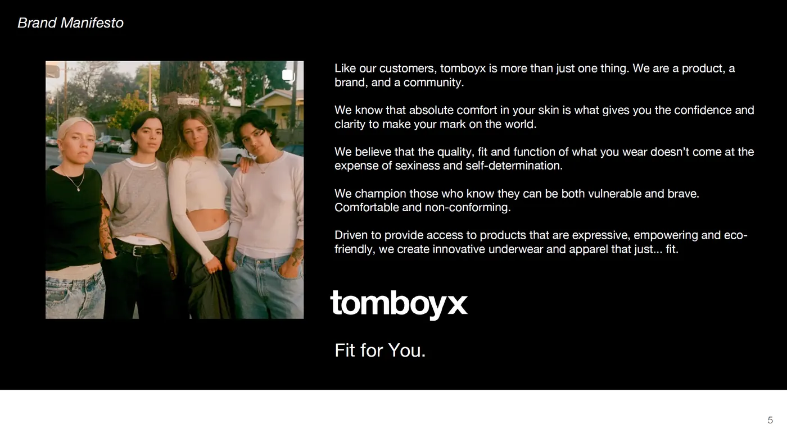
market forces have driven tomboyx to the breaking point — not past leadership or decisions that early investors may contextualize differently
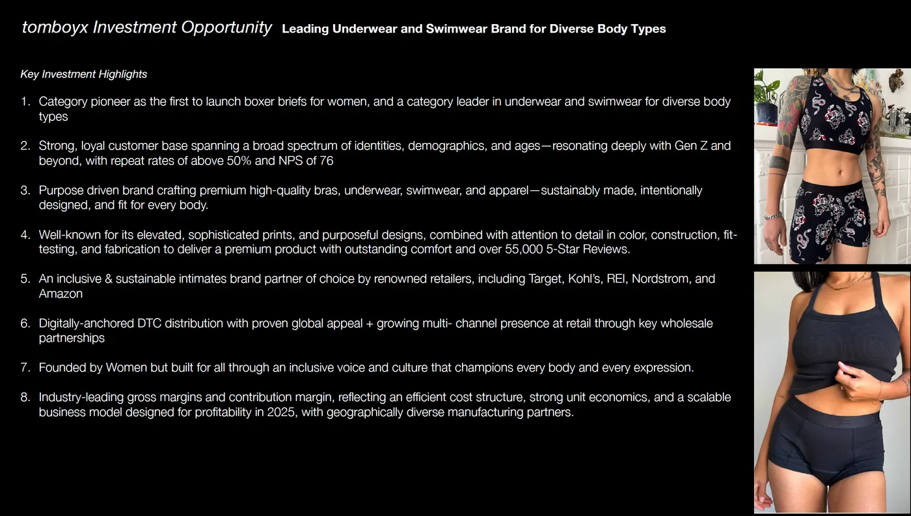
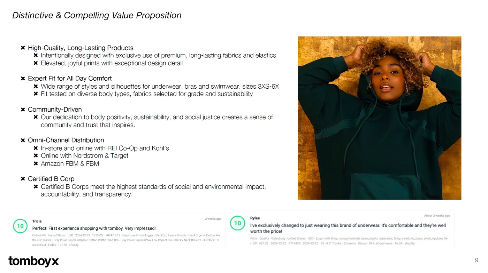
reinforces the lived truth of the brand — tomboyx supports XXS–XXXXXL with diverse silhouettes
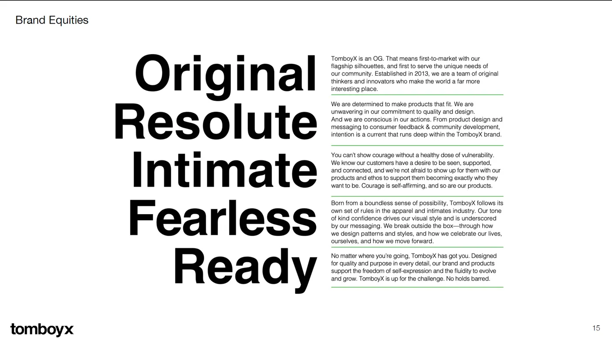
a reminder to investors of the values of the company — implicitly saying, "we are your people"
for the values folks
Values-driven investors — like those interested in investing in women-owned companies that serve diverse bodies — care about the market opportunity but also want to understand they are with "their" people.
Imagery nods to the female gaze in a deliberate repudiation of male-gaze focused marketing.
language calls to investors' values, with a framing around the lack of traditional VC funding for women and queer founders
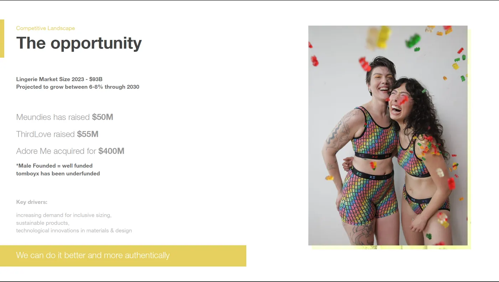
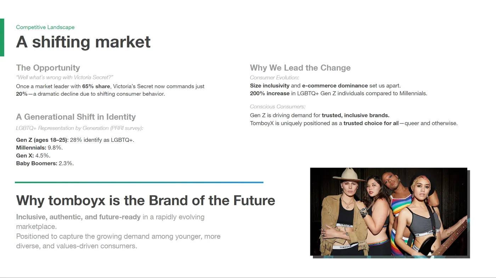
drives home the messaging — funded by people, not big VCs
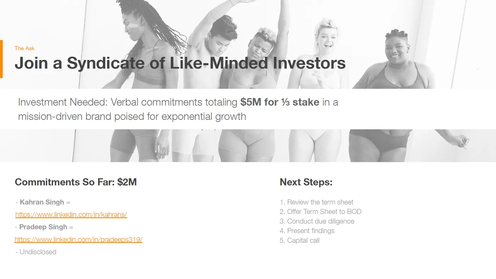
highlights the diversity of tomboyx — appeals to minority groups across generations and gender identities
for the operator-angels
Some angels & super-angels want to get in deep — especially those who have been operators of companies. The narrative in this deck needs to bring the data to life, in a detailed way that guides the investors across the story with multiple slides into company and market metrics.
A revised version of the deck for angels and operator-angels — focused on the numbers in the business.
highlighting strong metrics in a way accessible for investors unfamiliar with the underwear sector
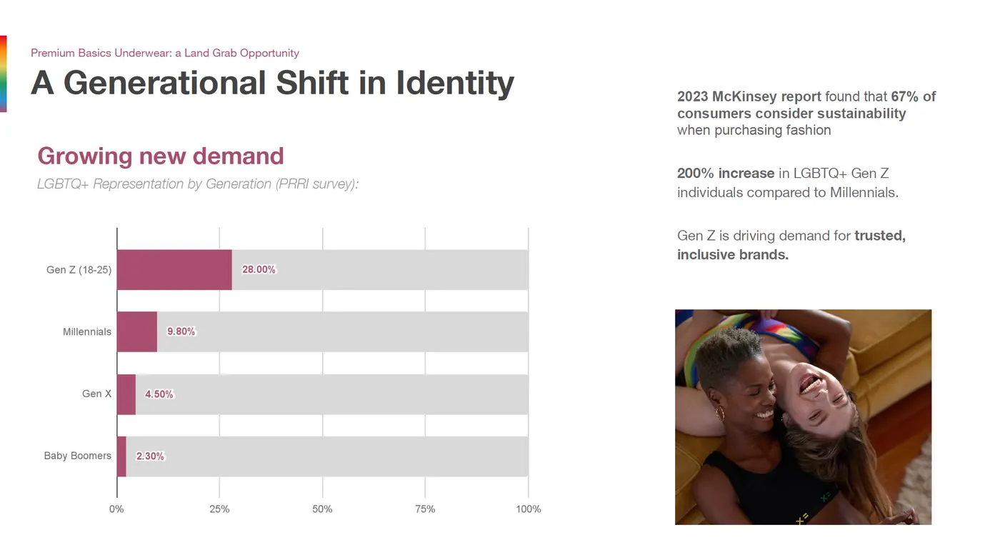
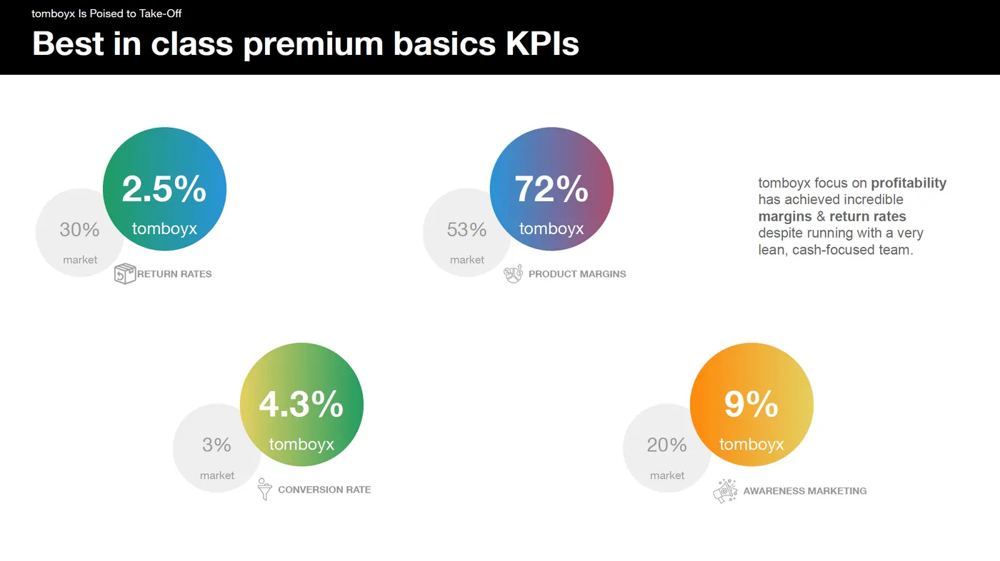
quantify market growth and the outcomes of LGBTQ consumer shifts
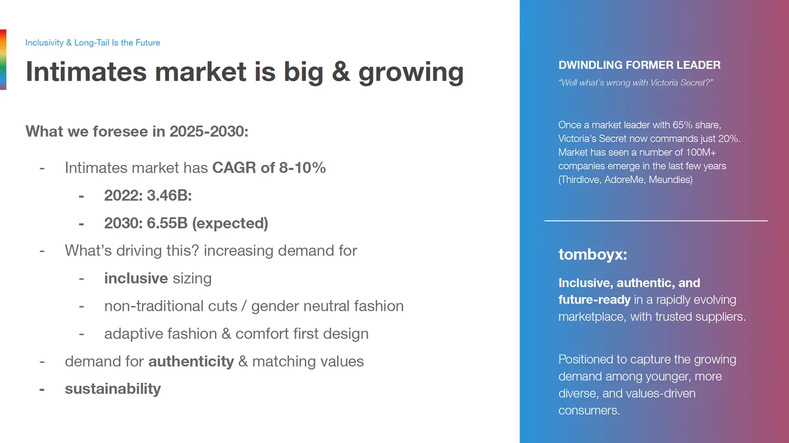
guiding investors through typical questions with a mix of data and narrative
for the syndicates
For syndicates with diverse groups of limited partners (LPs), a focus on the exceptional elements that make tomboyx special — including bringing key leadership to be part of the pitch — dramatically increased the emotional connection with investors, getting the company past screening rounds and in front of decision makers.
Colors, language, size and style of imagery all contribute to the emotional resonance investors find with the deck.
showcasing recent wedding and graduation invites the company has received from fans
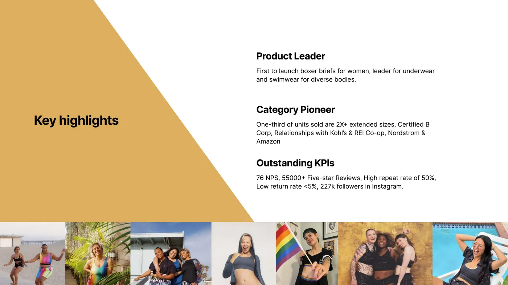
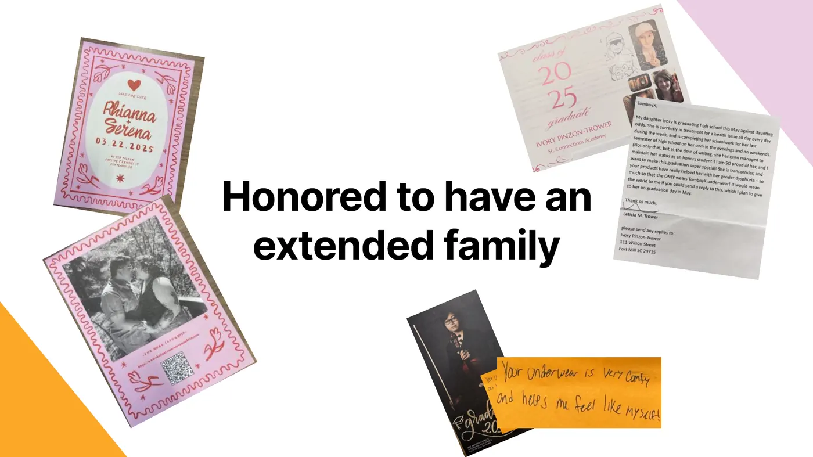
language captures the exceptional metrics while keeping warmth at the forefront
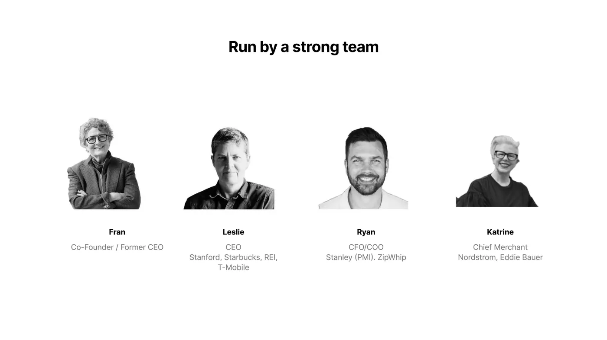
layout and minimal focus on the past draws attention to the team, versus individual players